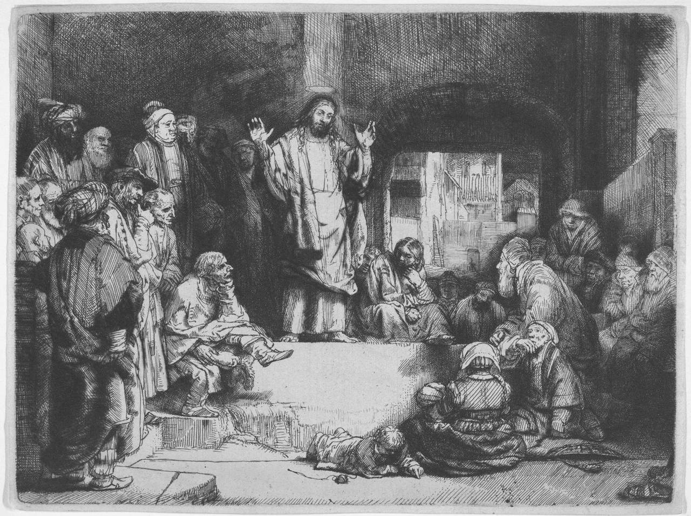

Jesus não foi só um grande mestre. Os Evangelhos o apresentam como a Palavra eterna de Deus, que se tornou gente para mostrar quem Deus é e para salvar.
- Ele falou e agiu com a autoridade de Deus, e os primeiros cristãos o adoraram como Deus.
- Ao se tornar homem, não deixou de ser Deus: sentiu fome, cansaço e tristeza de verdade.
- É o Messias, que venceu morrendo; quem o recebe se torna filho de Deus.
Texto central: João 1:1-18Leitura: cerca de 15 min

Versículo-chave
A Palavra se tornou um ser humano e morou entre nós, cheia de amor e de verdade.João 1:14 · NTLH
Questão central
Jesus foi um grande homem, um profeta admirável, um mestre de ética como poucos? Ou ele é alguém que não cabe em nenhuma dessas definições? E, se for, que diferença isso faz para quem está começando a levar Deus a sério?
Introdução
Pouca gente fala mal de Jesus. Pessoas de religiões diferentes, e muitas sem religião nenhuma, costumam se referir a ele com respeito: um mestre de ética, um profeta, um espírito iluminado, um defensor dos pobres. É um consenso curioso. Quase todo mundo concorda que Jesus foi bom; quase ninguém concorda sobre quem ele foi.
O próprio Jesus conhecia essa variedade de opiniões. O Evangelho de Marcos conta que, certa vez, ele levou os discípulos para o norte, até os povoados perto de Cesareia de Filipe. Não era um lugar qualquer. Ali havia um santuário dedicado a Pã, um dos deuses gregos, e Herodes, o Grande, tinha mandado erguer na região um templo em honra do imperador Augusto. Era terra de deuses e de césares. Foi nesse cenário que Jesus perguntou: "Quem o povo diz que eu sou?" (Marcos, capítulo 8, versículo 27).
As respostas eram todas elogiosas. Uns diziam que ele era João Batista; outros, que era Elias; outros, um dos profetas. Jesus não discutiu nenhuma delas. Fez outra pergunta, e essa já não era sobre o povo: "E vocês? Quem vocês dizem que eu sou?" Pedro respondeu: "O senhor é o Messias!" (Marcos 8:29).
A pergunta não aceita resposta por procuração. A opinião dos seus pais, do seu pastor ou do seu professor pode ajudar, mas em algum momento ela volta para você, do mesmo jeito que voltou para Pedro. Este estudo é um convite para pensar nela com calma, com a Bíblia aberta.
Em poucas linhas
- Texto centralJoão 1:1-18O começo do quarto Evangelho
- Quem escreveuO apóstolo JoãoSegundo a tradição cristã antiga
- Onde Jesus fez a perguntaCesareia de FilipeTerra de um santuário a Pã e de um templo a Augusto
- Registro romanoPor volta do ano 110Plínio relata hinos a Cristo "como a um deus"
Fundamentação bíblica
O texto central é o começo do Evangelho de João. Evangelho quer dizer "boa notícia", e é o nome dado aos quatro livros do Novo Testamento que narram a vida, a morte e a ressurreição de Jesus. A tradição cristã antiga atribui este quarto Evangelho ao apóstolo João, um dos doze discípulos que andaram com Jesus. Quando você ler "João 1:14", entenda: livro de João, capítulo 1, versículo 14.
Marcos começa a história de Jesus no rio Jordão; Mateus e Lucas, no nascimento em Belém. João começa antes do começo:
1 No começo aquele que é a Palavra já existia. Ele estava com Deus e era Deus.
2 Desde o princípio, a Palavra estava com Deus.
3 Por meio da Palavra, Deus fez todas as coisas, e nada do que existe foi feito sem ela.
4 A Palavra era a fonte da vida, e essa vida trouxe a luz para todas as pessoas.
5 A luz brilha na escuridão, e a escuridão não conseguiu apagá-la.
10 A Palavra estava no mundo, e por meio dela Deus fez o mundo, mas o mundo não a conheceu.
11 Aquele que é a Palavra veio para o seu próprio país, mas o seu povo não o recebeu.
12 Porém alguns creram nele e o receberam, e a estes ele deu o direito de se tornarem filhos de Deus.
14 A Palavra se tornou um ser humano e morou entre nós, cheia de amor e de verdade. E nós vimos a revelação da sua natureza divina, natureza que ele recebeu como Filho único do Pai.
18 Ninguém nunca viu Deus. Somente o Filho único, que é Deus e está ao lado do Pai, foi quem nos mostrou quem é Deus.
Texto bíblico: Nova Tradução na Linguagem de Hoje (NTLH). Copyright 2000 Sociedade Bíblica do Brasil. Todos os direitos reservados. Vale a pena ler o trecho inteiro, João 1:1-18, na sua Bíblia.
João não diz o nome de Jesus logo de saída. Chama-o de "a Palavra" (algumas Bíblias dizem "o Verbo"; é a mesma palavra grega, logos). A escolha não foi casual. Para um leitor judeu, a palavra de Deus lembrava o relato da criação, em que Deus fala e as coisas passam a existir, e lembrava as mensagens que Deus enviava pelos profetas. Para um leitor de cultura grega, logos era uma palavra com longa história na filosofia. O comentarista Craig Keener observa que nenhum outro conceito à disposição de João expressava tão bem alguém que fosse ao mesmo tempo divino e distinto do Pai.
Dois outros escritores do Novo Testamento dizem o mesmo por outro caminho. Paulo, escrevendo aos cristãos da cidade de Filipos, afirma que Jesus "tinha a natureza de Deus" e que, mesmo assim, "abriu mão de tudo o que era seu e tomou a natureza de servo" (Filipenses 2:6-7). Aos de Colossos, escreve: "Antes de tudo, ele já existia" (Colossenses 1:17).
Desenvolvimento
A saída que Jesus não deixou aberta
A resposta mais confortável sobre Jesus é também a mais comum: um grande mestre, e nada além disso. Ela não exige nada. Um mestre se admira à distância; não se adora, nem se obedece.
O problema é que os Evangelhos não deixam essa saída aberta. Jesus não se limitou a ensinar que devemos amar o próximo. Ele perdoou pecados de pessoas que nunca o tinham ofendido, e os religiosos presentes entenderam muito bem o que aquilo significava: só Deus pode perdoar pecados (Marcos 2:1-12). Disse que existia antes de Abraão, que viveu séculos antes dele (João 8:58). Aceitou que Tomé o chamasse de "meu Senhor e meu Deus" (João 20:28).
C. S. Lewis, professor de literatura em Oxford que passou anos como ateu antes de se tornar cristão, percebeu o tamanho do problema numa série de palestras no rádio da BBC, depois reunidas no livro Cristianismo Puro e Simples. Um homem que fosse apenas homem e dissesse o tipo de coisa que Jesus disse, escreveu Lewis, "não seria um grande mestre de moral" (tradução nossa). Seria um desequilibrado ou um impostor. Ou então seria exatamente quem dizia ser.
Um homem que fosse apenas homem e dissesse o tipo de coisa que Jesus disse não seria um grande mestre de moral.
C. S. Lewis, Cristianismo Puro e Simples (tradução nossa)Há quem responda que Jesus nunca disse nada disso e que a ideia de um Jesus divino foi inventada séculos depois. A história não ajuda essa hipótese. Por volta do ano 110, Plínio, o Jovem, governador romano da província da Bitínia, na atual Turquia, escreveu ao imperador Trajano pedindo orientação sobre os cristãos. Plínio não tinha nenhuma simpatia por eles. Mesmo assim, registrou que se reuniam antes do amanhecer e cantavam hinos a Cristo como a um deus.
As cartas de Paulo, ainda mais antigas, já confessam que "Jesus Cristo é o Senhor" (Filipenses 2:11). A fé na divindade de Jesus não foi um acréscimo tardio: estava lá desde o começo.
Com Deus, e Deus
O primeiro versículo de João diz duas coisas que parecem se chocar. A Palavra "estava com Deus": portanto, não é a mesma pessoa que o Pai. E a Palavra "era Deus": portanto, não é uma criatura, nem um ser divino de segunda categoria. O versículo 3 fecha a porta para qualquer meio-termo: tudo o que existe foi feito por meio da Palavra. Quem fez todas as coisas não pode ser uma delas.
É daqui que os cristãos tiram o que chamam de Trindade: há um só Deus, que existe eternamente como Pai, Filho e Espírito Santo. Ninguém precisa entender isso por inteiro para começar a seguir Jesus; os próprios teólogos admitem que estão diante de um mistério. Mas é importante saber o que a frase "Filho de Deus" não quer dizer. Ela não indica que Jesus nasceu depois do Pai, como um filho nasce depois do pai. A Declaração de Fé das Assembleias de Deus resume assim: chamar Jesus de Filho de Deus "significa que Ele é Deus igual ao Pai".
Quando o autor entra na história
O versículo 14 é o centro do texto: "A Palavra se tornou um ser humano e morou entre nós." Os cristãos chamam isso de encarnação, palavra que quer dizer "fazer-se carne", tornar-se gente de verdade.
Uma comparação ajuda, desde que a gente não peça a ela mais do que pode dar. Pense num romancista que ama os personagens que criou. Eles vivem dentro do livro e só o conhecem de forma indireta, pelas marcas que ele deixou na história. Se esse autor quisesse ser conhecido por eles, e não apenas deduzido, teria um único caminho: escrever a si mesmo dentro do livro, como um dos personagens, nascido num capítulo, numa cidade, numa família. Continuaria sendo o autor. Mas agora estaria sujeito ao enredo, ao cansaço, à fome e, se a história chegasse a esse ponto, à traição.
Toda comparação manca, e esta também: Deus não é escritor de ficção, e nós não somos personagens de papel. Mas ela mostra o que João está dizendo. Deus não mandou apenas recados; entrou na história. Jesus sentiu fome (Mateus 4:2), cansaço (João 4:6) e sede (João 19:28), e chorou diante do túmulo de um amigo (João 11:35). Não era Deus fingindo ser homem.
E também não era um homem que deixou de ser Deus. Quando Paulo diz que Jesus "abriu mão de tudo o que era seu", não quer dizer que ele se desfez da divindade. O comentarista Matthew Henry explica que ele deixou de lado as honras e a glória do céu, e ressalta que, ao se tornar carne, a Palavra não deixou de ser a Palavra de Deus. O autor que entra no livro não deixa de ser autor.
Há ainda um detalhe que o português esconde. O verbo grego traduzido por "morou" quer dizer, ao pé da letra, "armou a sua tenda". Henry e John Wesley lembram a tenda que o povo de Israel montava no meio do acampamento, no deserto, como sinal de que Deus estava com eles. Wesley escreveu que Jesus não nos fez uma visita passageira: viveu entre nós.
O rosto do Deus invisível
O versículo 18 começa com uma frase que qualquer pessoa honesta pode assinar: "Ninguém nunca viu Deus." Durante séculos, a humanidade imaginou Deus de mil maneiras, quase sempre à sua própria imagem: um juiz implacável, um patrão distante, uma força impessoal, um avô bonachão. João responde que o Filho "foi quem nos mostrou quem é Deus".
Isso muda a maneira de fazer a pergunta. Em vez de começar perguntando como Deus deve ser, o cristão começa olhando para Jesus. E o que se vê nos Evangelhos é desconcertante. Jesus tocou num leproso, quando todos evitavam até chegar perto (Marcos 1:40-42). Conversou com uma mulher samaritana, que pertencia a um povo desprezado pelos judeus, sobre as perguntas mais profundas da vida dela (João 4). Chamou para andar com ele um cobrador de impostos, profissão odiada na época (Marcos 2:14). Se Deus é assim, ele é ao mesmo tempo mais santo e mais próximo do que a gente imaginava.
O Messias que ninguém esperava
Resta a resposta de Pedro: "O senhor é o Messias!" A palavra vem do hebraico e quer dizer "ungido". No antigo Israel, um profeta ou um sacerdote derramava azeite na cabeça do novo rei, como sinal de que Deus o tinha escolhido. Com o tempo, o povo passou a esperar um ungido definitivo, o Salvador prometido por Deus. "Cristo" é a mesma palavra em grego. A Declaração de Fé das Assembleias de Deus diz que "Messias" e "Cristo" "são a mesma coisa". Jesus Cristo, portanto, não é nome e sobrenome: é Jesus, o Messias.
Pedro acertou a palavra, mas ainda não entendia o que ela significava. Logo depois, Jesus começou a ensinar que precisava sofrer muito, ser morto e ressuscitar (Marcos 8:31). Pedro chegou a repreendê-lo por isso (Marcos 8:32). Ele esperava um Messias que vencesse os inimigos; Jesus anunciava um Messias que venceria morrendo. Na terra dos césares, que governavam pela força, Jesus apresentava outro tipo de reinado.
O próprio Evangelho de João explica o motivo:
"Porque Deus amou o mundo tanto, que deu o seu único Filho, para que todo aquele que nele crer não morra, mas tenha a vida eterna. Pois Deus mandou o seu Filho para salvar o mundo e não para julgá-lo." (João 3:16-17)
Salvar, aqui, quer dizer resgatar. A Bíblia chama de pecado tudo o que nos afasta de Deus, e diz que esse afastamento acaba em morte (Romanos 6:23). Jesus veio para trazer de volta, e a vida que ele oferece, a vida eterna, não é apenas uma vida que dura para sempre: é a vida com Deus, que começa agora.
Leituras equivocadas
Jesus foi apenas um grande mestre Grave
Os Evangelhos mostram Jesus perdoando pecados e aceitando ser chamado de Deus. Um simples mestre não diria essas coisas.
Ao virar homem, Jesus deixou de ser Deus Grave
Filipenses 2 diz que ele já tinha a natureza de Deus e tomou também a de servo. Deixou de lado as honras do céu, não a divindade.
Jesus só parecia humano Moderada
João 1:14 diz que a Palavra se tornou um ser humano. Jesus teve fome, sede, cansaço e chorou.
"Filho de Deus" quer dizer que ele veio depois do Pai Moderada
A expressão indica que ele é Deus igual ao Pai, não que foi criado ou nasceu depois dele.
Aplicação prática
Se Jesus é quem João diz, a primeira consequência não é uma lista de tarefas, mas uma mudança de atitude: deixar de tratá-lo como um personagem admirável e começar a tratá-lo como alguém vivo, que pode ser conhecido.
Isso tem desdobramentos bem concretos. O primeiro é conhecer a história dele pela fonte. O Evangelho de Marcos é o mais curto dos quatro e pode ser lido em poucas sentadas. Leia como quem lê a biografia de alguém que vai encontrar em breve.
O segundo diz respeito à oração. Orar não é recitar fórmulas para um ser distante, mas falar com alguém que conhece a vida humana por dentro, inclusive a fome, o cansaço e a traição. Você pode dizer a ele o que realmente está acontecendo, com as suas palavras.
O terceiro é a resposta de João 1:12: "alguns creram nele e o receberam". Receber Jesus não é aderir a uma opinião, como quem escolhe entre as alternativas do povo de Cesareia. É confiar nele e abrir a vida para que ele a conduza. Ninguém faz isso de uma vez por todas e sem dúvidas; os próprios discípulos aprenderam aos poucos.
E há um efeito sobre as conversas. Quando alguém disser que Jesus foi só um homem bom, você não precisa vencer a discussão. Pode fazer a pergunta que ele fez, com a mesma serenidade, e mostrar o que os textos dizem.
Perguntas para reflexão
- Por que a opção "Jesus foi apenas um grande mestre" é mais difícil de sustentar do que parece à primeira vista?
- O versículo 1 diz que a Palavra "estava com Deus" e "era Deus". Como você explicaria essas duas afirmações a alguém que nunca leu a Bíblia?
- A sua imagem de Deus se parece com o que Jesus mostrou nos Evangelhos? Em que ela é diferente?
- Se Jesus fizesse a você a pergunta que fez a Pedro, o que você responderia hoje?
Para guardar
- Os Evangelhos não permitem tratar Jesus como um simples mestre de moral: ele falou e agiu como quem tem a autoridade de Deus, e os primeiros cristãos o adoraram como Deus.
- Jesus é a Palavra eterna, que estava com Deus e é Deus. Ao se tornar homem, ele não deixou de ser Deus, e passou a viver a vida humana por inteiro.
- Em Jesus, o Deus invisível mostrou o seu rosto. Ele é o Messias, que veio salvar dando a própria vida, e quem o recebe ganha o direito de se tornar filho de Deus.
Continue aprendendo
- Leia o Evangelho de Marcos do começo ao fim e anote o que Jesus diz sobre si mesmo.
- Leia João 3, em que Jesus conversa à noite com Nicodemos sobre o que significa nascer de novo. Esse será o tema de um próximo estudo desta biblioteca.
- Leia Filipenses 2:5-11 e observe o caminho que Jesus fez, da glória até a cruz e de volta à honra.
Referências
- Bíblia, Nova Tradução na Linguagem de Hoje: João 1, João 3, Marcos 8, Filipenses 2, Colossenses 1. Outras passagens citadas por referência: Marcos 1:40-42; 2:1-14; 8:31-32; João 4; 8:58; 11:35; 19:28; 20:28; Mateus 4:2; Romanos 6:23.
- Convenção Geral das Assembleias de Deus no Brasil, Declaração de Fé (CPAD, 2016), capítulo IV, itens 1 e 5.
- Craig S. Keener, The Gospel of John: A Commentary (Baker Academic, 2012), volume 1, página 363.
- Matthew Henry, Commentary on the Whole Bible, comentário a João 1 e a Filipenses 2 (domínio público).
- John Wesley, Explanatory Notes, nota a João 1:14 (domínio público).
- C. S. Lewis, Mere Christianity (Cristianismo Puro e Simples), livro 2, citado em "Lewis's trilemma", Wikipédia, consulta em 30/10/2026.
- Plínio, o Jovem, Cartas, X.96, resumida em "Pliny the Younger on Christians", Wikipédia, consulta em 30/10/2026.
- Cesareia de Filipe: "Banias", Wikipédia, consulta em 30/10/2026.
Este estudo está nas trilhas
- Primeiros passos na féPasso 1 de 5
- Fundamentos da fé cristãPasso 2 de 5
As trilhas são sugestões de percurso. Você pode ler qualquer estudo, em qualquer ordem.
Está discipulando alguém?
Mande esta lição para quem você acompanha.
Fale com o editor
Wan Anderson Pelicioni de Castro, editor responsável. Sugestão de pauta, correção ou conversa: mande mensagem no Instagram.
Guia do discipulador
Objetivo
Ajudar a pessoa a conhecer Jesus como João o apresenta: a Palavra eterna, que estava com Deus e era Deus, e se tornou um ser humano. No fim, ela diz com as próprias palavras quem é Jesus, o que são "Filho de Deus" e "Messias", por que ele veio e como segui-lo.
Fundamentação adicional
A autoria pelo apóstolo João é a tradição antiga, e a lição a apresenta assim. João abre o livro com as palavras de Gênesis 1:1 ("No começo") e chama Jesus de Logos, a "Palavra". Craig Keener observa que nenhum conceito expressava melhor alguém ao mesmo tempo divino e distinto do Pai. É o que diz o versículo 1.
O verbo de João 1:14 traduzido por "morou" vem da palavra grega para tenda. Henry e Wesley leem nele a lembrança do tabernáculo. Henry acrescenta que, ao se tornar carne, a Palavra não deixou de ser a Palavra de Deus. Essa frase ajuda a responder quem lê Filipenses 2:7 como se Jesus tivesse deixado de ser Deus.
A Declaração de Fé das Assembleias de Deus afirma Jesus "plenamente Deus, plenamente Homem" e diz que "Filho de Deus" significa "Deus igual ao Pai".
Referências
- Convenção Geral das Assembleias de Deus no Brasil, Declaração de Fé (CPAD, novembro de 2016): Cremos, item 3; capítulo III, itens 2 e 5; capítulo IV, itens 1, 2 e 5 [verificada].
- Craig S. Keener, The Gospel of John: A Commentary (Baker Academic, 2012; antes Hendrickson, 2003), volume 1, página 363 [verificada no trecho citado].
- Matthew Henry, Commentary on the Whole Bible, comentário a João 1, Marcos 8, Filipenses 2 e Colossenses 1 (domínio público) [verificada].
- John Wesley, Explanatory Notes, notas a João 1:1 e 1:14 (domínio público) [verificada].
- John Stott, Basic Christianity (IVP, 2006): a ordem dos capítulos (o que Jesus disse de si, seu caráter, a ressurreição) inspira o roteiro [parcial].
- The Navigators, Design for Discipleship, livro 1, Your Life in Christ (NavPress): formato de estudo com perguntas abertas, sozinho, um a um ou em grupo [verificada quanto ao formato].
Diferenças de tradução
A NTLH diz "a Palavra"; a Almeida diz "o Verbo". Em João 1:14 e 17, a NTLH diz "amor" onde outras traduções dizem "graça". A palavra "graça" fica para uma lição própria. Em Filipenses 2:7, a NTLH diz "abriu mão de tudo o que era seu", e a Almeida citada pela Declaração de Fé diz "aniquilou-se a si mesmo". Nas duas, o versículo 6 já afirmou que ele tinha a natureza de Deus: ele acrescentou a natureza de servo, não trocou uma pela outra.
Dúvidas frequentes
"Se Jesus é Deus, com quem ele falava quando orava?" Com o Pai. O versículo 1 já mostra que a Palavra "estava com Deus". Há um só Deus, que existe como Pai, Filho e Espírito Santo. Uma lição sobre o Espírito Santo pode voltar ao assunto.
"Jesus virou Deus depois?" Não. João Batista diz que Jesus já existia antes de João nascer (João 1:15), e Colossenses 1:17 diz que ele existia antes de tudo. A Declaração de Fé nega que o Filho tenha sido criado.
"Um amigo meu diz que a Palavra era 'um deus'." É a tradução das Testemunhas de Jeová. Responda com respeito e com o próprio texto: tudo foi feito por meio da Palavra, e nada do que existe foi feito sem ela (versículo 3). Quem fez todas as coisas não pode ser uma delas. Não transforme o encontro num debate.
"Por que Jesus mandou os discípulos ficarem calados?" (Marcos 8:30). Henry entende que o segredo valia até a prova estar completa e os discípulos receberem o Espírito Santo (ele liga isso a Atos 2:36). Logo depois, Jesus anuncia que vai sofrer, morrer e ressuscitar (Marcos 8:31). Basta uma resposta curta.
Cuidados pastorais
Não pressione ninguém a contar o que pensava antes ou a "decidir" na hora; as perguntas 3 e 4 são convite. Se a pessoa vem de outra religião ou igreja, não fale mal de ninguém. Evite promessas: conhecer Jesus não garante vida sem problemas.
Roteiro do encontro (40 minutos)
- Conversa de chegada e leitura da Questão central e da Introdução (5 min).
- Leitura em voz alta de João 1:1-18 na Bíblia, devagar (5 min).
- "Desenvolvimento", um subtópico por vez, com pausa para dúvidas (15 min).
- "Perguntas para reflexão" (10 min).
- "Aplicação prática" e oração curta, feita por quem quiser (5 min).
Alertas de interpretação
Não ensine que Jesus deixou de ser Deus ao se tornar homem, nem que só parecia humano. "Primeiro Filho" (Colossenses 1:15) não quer dizer primeira criatura: Henry diz que o título não faz dele uma criatura; o sentido é de primazia, como o herdeiro da família.
Sinais de que a pessoa entendeu
Ela explica, sem ler, por que "foi só um grande mestre" não basta, diz o que é a encarnação ("Deus veio em pessoa") e liga "Cristo" a "Messias".
Divergências entre tradições
Quase não há divergência entre evangélicos aqui. Há formas diferentes de explicar o que Jesus deixou de lado em Filipenses 2:7, mas todas concordam que ele não deixou de ser Deus. A Declaração de Fé diz que "os unicistas confundem as pessoas" da Trindade e chama essa crença, junto com outras, de "em desacordo com a fé cristã bíblica e histórica". As Testemunhas de Jeová negam que Jesus seja Deus; a Declaração não as cita pelo nome. Trate o assunto só se a pessoa perguntar, sempre com respeito.
Como foi feito
Estudo escrito com IA (Claude, da Anthropic) a partir de pesquisa com fontes conferidas na página: texto bíblico NTLH lido em duas reproduções, Declaração de Fé das Assembleias de Deus, comentários clássicos e fontes históricas citadas nas referências. Reescrito em 30/10/2026 pela diretriz de qualidade literária do editor. Publicação automática autorizada pelo responsável editorial.